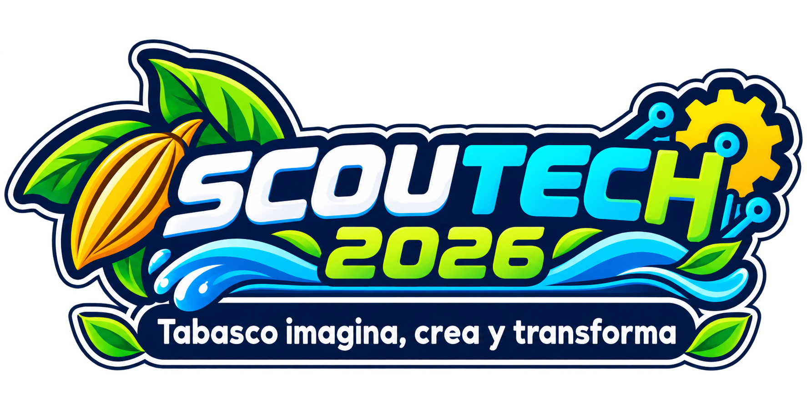

COLEGIO SCOUT · SEMANA DE CIENCIA Y TECNOLOGÍA

¡Tabasco también se juega!
Explora videojuegos creados por estudiantes. Descubre nuestra cultura, biodiversidad y el poder de la tecnología.
🎮 Explorar videojuegos ↓ARCADE EDUCATIVO
Elige tu aventura
11 videojuegos creados por estudiantes de 4.º, 5.º y 6.º de primaria. ¡Elige tu aventura!
Pequeñas ideas, grandes proyectos
Esta galería reúne proyectos educativos realizados por estudiantes del Colegio Scout para SCOUTTECH 2026. Los videojuegos fueron desarrollados en Scratch y preparados para la web con TurboWarp.
Los videojuegos reflejan el trabajo creativo y colaborativo de nuestros estudiantes.